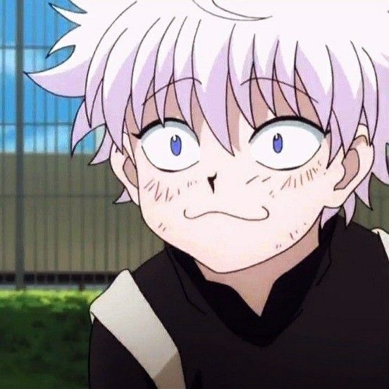
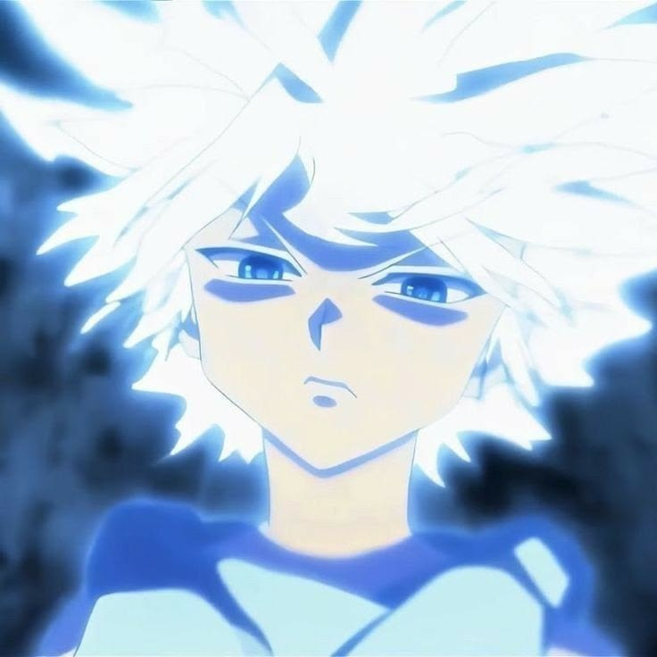

🍫 Killua absolutely loves chocolate.
🍬 He frequently buys chocolate snacks.
💰 He can spend a surprising amount of money on chocolate.
🍫 Chocolate Balls are one of his favorite treats.
🎮 He enjoys video games.
🛹 He likes skateboarding.
🧸 He has a softer side that contrasts with his assassin image.
😋 He enjoys tasty food.
💤 Killua enjoys relaxing when he gets the chance.
😎 He likes doing things his own way.

Nen & Godspeed
✨ Killua learns to use Nen.
⚡ His Nen type is Transmutation.
🔋 He transforms his aura to have properties similar to electricity.
⚡ His electricity-based abilities are connected to his childhood training.
🌩️ Godspeed is one of his most famous abilities.
💨 Godspeed greatly increases his combat speed.
🤖 One part of Godspeed allows his body to react automatically.
⚡ This automatic reaction is called Whirlwind.
🏃 Another aspect of Godspeed is Speed of Lightning.
⚡ Speed of Lightning lets Killua control his movement using electricity.
🧠 His abilities work especially well with his quick thinking.
🔋 Killua has to manage his electrical aura carefully.
⚡ His electricity can temporarily stun opponents.
🌩️ Godspeed makes him one of the fastest fighters in the series.
💥 His electric attacks can catch opponents off guard.

killua>
killua>